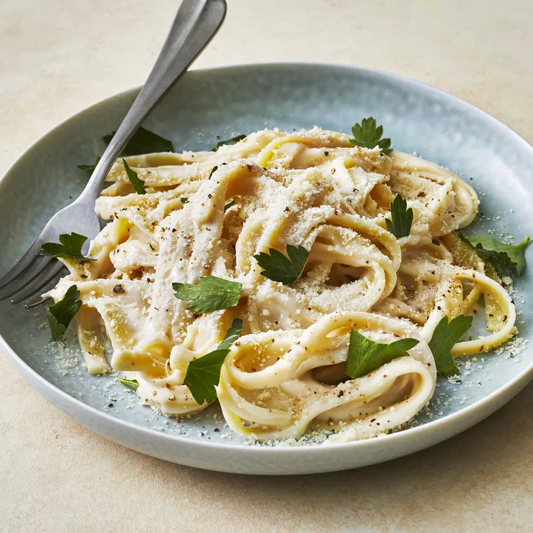

Alfredo Sauce
Quick and Easy Alfredo Sauce
I experimented with Alfredo sauce until I found a quick, cheap, and easy Alfredo sauce combination -- the secret ingredient is cream cheese!
Ingredients
- 1/2 cup butter
- 1 (8 ounce) package cream cheese
- 2 teaspoons garlic powder
- 2 cups milk
- 6 ounces grated Parmesan cheese
- 1/8 teaspoon ground black pepper
Steps
- Melt butter in a medium, non-stick saucepan over medium heat.
- Add cream cheese and garlic powder, stirring with a wire whisk until smooth.
- Add milk, a little at a time, whisking to smooth out any lumps.
- Stir in Parmesan cheese and pepper.
- Remove from heat when sauce reaches desired consistency.
- Sauce will thicken rapidly. Thin with milk if cooked too long. Toss with hot pasta to serve.